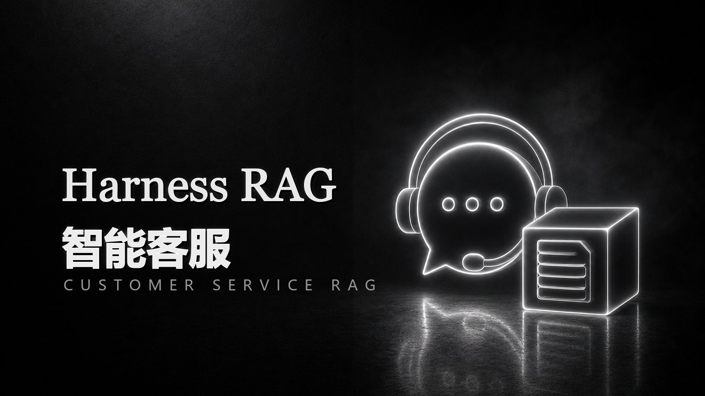

客服 RAG 不只是“检索 + 生成”。它需要能识别业务线、处理追问上下文、给出政策来源、规避隐私和赔偿风险，并在高风险场景转人工。
AI App · 2026 · Harness / RAG / Customer Service
Harness RAG
智能客服
面向电商客服场景的 RAG 项目，使用 Markdown 知识库、DuckDB 本地索引、QMD 混合检索、风险识别、转人工策略、前台聊天页、管理后台和 Harness 质量门禁，展示从原型到可评测 AI 应用的完整链路。

QMD 检索结合 Query 扩展、Metadata 命中、Dense 向量检索和 BM25 关键词检索，并用 RRF 融合排序。
客服风控投诉、赔偿、支付、账号安全、隐私等高风险场景触发转人工，避免越权承诺。
Harness 质量门禁把单元测试、离线 RAG 评测和 LLM-as-a-Judge 检查纳入交付链路。
Architecture
Input用户问题与多轮会话上下文
PlanQuery 规范化、扩展与检索计划
RetrieveQMD 混合召回与 RRF 排序
Policy风险识别、灰度规则、转人工判断
Answer引用约束回答、Trace 记录与评测输出
What I Built
项目把知识库、检索器、风险策略、Prompt、生成器、Trace 和评测解耦，后续可以替换 pgvector、Milvus、Qdrant、Elasticsearch 或企业内部模型。
- 客服前台聊天页与管理后台。
- 退款、发票、物流、订单、账号安全、支付扣款、退换货等知识库。
- 无 API Key 时使用本地模板生成，有 Key 时走 OpenAI 兼容接口。
- 离线评测：准确率、召回率、Top1 召回、转人工率、引用率、幻觉风险率。
RAG 架构设计、Markdown 知识库整理、DuckDB 索引、本地 HTTP 服务、QMD 检索、风险策略、评测脚本、Harness CI 质量门禁配置。
Run Locally
git clone https://github.com/1635338825-prog/customer-service-rag.git
cd customer-service-rag
pip install -r customer_service_rag/requirements.txt
python customer_service_rag/app.py serve --host 127.0.0.1 --port 8000
# 用户前台
http://127.0.0.1:8000/chat
# 管理后台
http://127.0.0.1:8000/admin